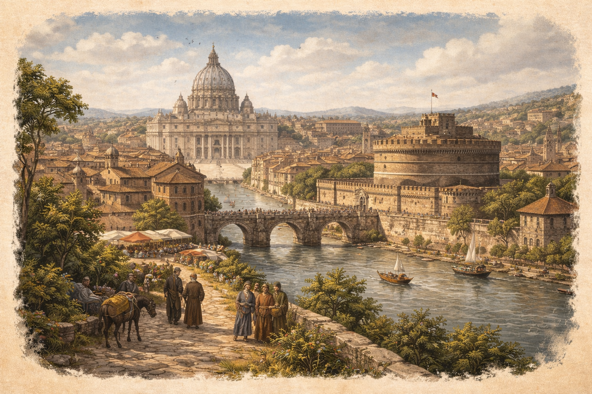

Egy bíboros nehézségei

Mostanában nehéz napokon megyek keresztül, egész nap csak Európa királyi udvarait járom és buzdítom a dicsőséges nagyurakat a felemelkedni készülő török elleni összefogásra. A szentatya sürgős parancsait teljesítem, éjt nap alá sürgök forgok, reverendám és mozzettám egy percre sem vehetem le, mert az idő szűkös. Olykor, vissza vágyom a régi időket, amikor még Rómában láttam el a szentatyát tanácsokkal és intéztem az egyház bürokráciai ügyeit, amikor még hatalmas palotámban lakhattam és vígan zenélhettem udvaromban.
Bíborosi küldetés
A hadiállapot napról napra feszültebb, a szentatya legutóbbi levelében arra kért hogy kezdjek bele a tizedek rohamos beszedésébe, mert nincs elég pénz a kereszteshadjáratok finanszírozására. IV. Jenő parancsára két héten belül a Magyar királyi udvarba látogatok, ugyanis Magyarország határos a rettegett Oszmán birodalommal és rendkívül fontos megbeszéléseket kell lebonyolítani a Magyar királyi udvarban is.